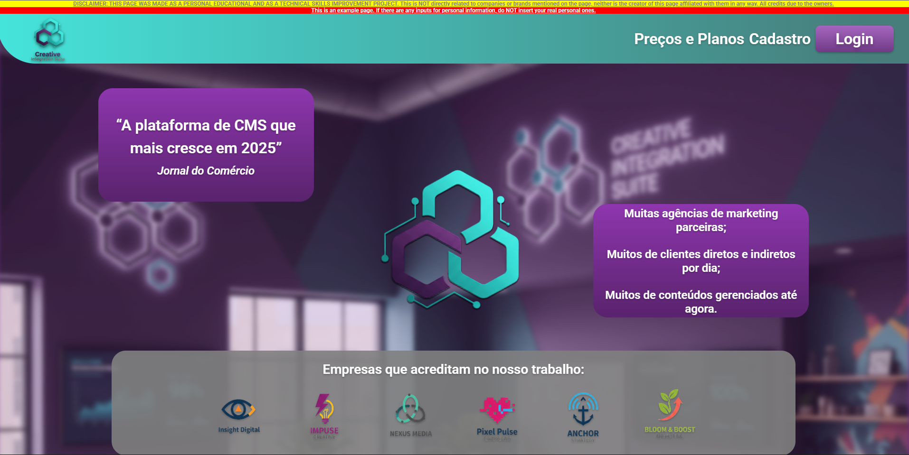

// hello world 👋
Desenvolvedor e analista de sistemas com +4 anos de experiência entregando projetos de alto impacto — do back-end à nuvem.
Sou desenvolvedor e analista de sistemas com mais de 4 anos de experiência entregando e gerenciando projetos no prazo e com qualidade. Tenho sólida atuação com diversas tecnologias em front-end e em back-end, além de aprofundar meus estudos em React e Node.js.
Possuo vivência em projetos internacionais de P&D para a HPE (EUA) e em sistemas de larga escala, acumulando histórico de liderança técnica e otimização de performance.
Sou proativo e focado em inovação, buscando aplicar minhas habilidades para alcançar resultados de alto impacto, aliando conhecimento técnico com forte capacidade de aprendizado e colaboração em equipe.
Tecnologias e ferramentas que utilizo para construir soluções robustas e escaláveis.
Projetos nacionais e internacionais com impacto real em performance e custos.
Atuei em dois projetos internacionais de P&D para a HPE (EUA), envolvendo gerenciamento de ativos computacionais.
Projetei e desenvolvi sistemas em C#, .NET e MySQL para análise e classificação de performance de ativos, gerando rankings de desempenho com recomendações que viabilizaram redução significativa de custos operacionais.
Sintetizei uma aplicação conteinerizada integrando Prometheus + Grafana + Node.js + TypeScript para monitoramento de métricas.
Destaque: atuei como líder de equipe, facilitando demandas entre o time técnico e stakeholders internacionais.
Desenvolvi APIs e funcionalidades críticas no TIMP — Tax Intelligence and Management Platform, um sistema de alcance nacional.
Realizei manutenção preventiva e evolutiva no front-end e back-end da aplicação.
Destaque: otimizei um módulo reduzindo o tempo de resposta de 3 minutos para menos da metade, aplicando técnicas avançadas de normalização no banco de dados.
Curso superior expandindo repertório em segurança de sistemas, matemática e estatística aplicadas à computação, sistemas embarcados e desenvolvimento mobile.
Curso técnico integrado ao ensino médio: lógica de programação, algoritmos, orientação a objetos, desenvolvimento web, bancos de dados, testes automatizados e metodologias ágeis.
Selecione um projeto para ver detalhes e uma prévia em funcionamento.
SaaS que automatiza fluxos de ideação, desenvolvimento, correção e lançamento de conteúdo em agências de marketing.
Aplicação web inspirada na página de login do Instagram, com fidelidade visual e responsividade.
Implementação minimalista do clássico jogo dos pontinhos, explorando manipulação de DOM e lógica concisa.

Versão inicial do TCC: um SaaS que automatiza fluxos de ideação, desenvolvimento, correção e lançamento de conteúdo em agências de marketing. Está sendo refatorado para incluir responsividade e novas tecnologias.
Excelência em proatividade e consistência; monitor no Academy Future; destaque da organização com publicação no Instagram oficial.
Classificação internacional C1 (Avançado/Proficiente) no Test of English as a Foreign Language.
Curso completo de inglês (básico ao avançado): interpretação, escrita técnica, fala e argumentação. Média final: 93.83/100.
Conquistou o 1º lugar no processo seletivo para o curso técnico integrado em Informática.
Nota 900 na redação do Exame Nacional do Ensino Médio.
Voluntário e bolsista em projetos educacionais, ministrando curso introdutório de programação para jovens.
Estou aberto a novas oportunidades e colaborações. Vamos criar algo incrível juntos!